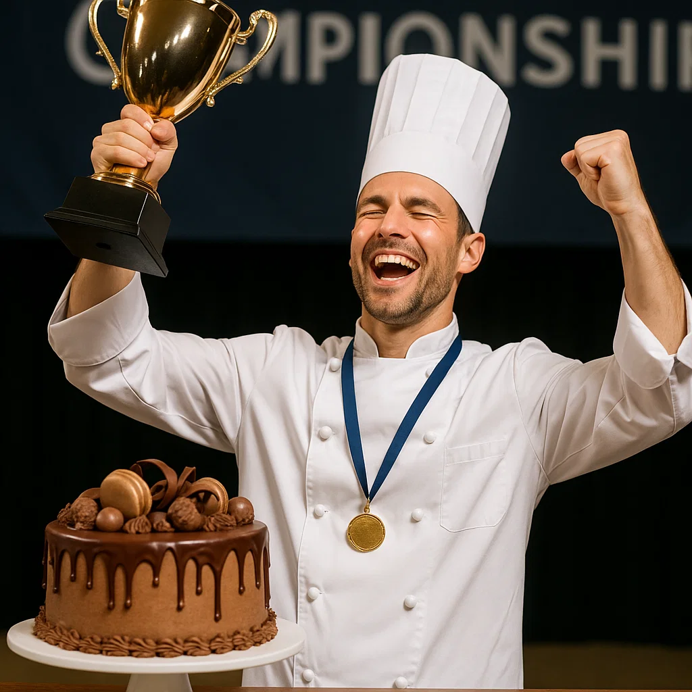

¡Ganamos el Gran Concurso de Pastelería 2025!
Estamos muy felices de compartir con nuestros clientes que Pastelería Mil Sabores ganó el Gran Concurso Nacional de Pastelería 2025. Nuestro equipo fue reconocido por la creatividad en la decoración de tortas y por la combinación de sabores innovadores que sorprendieron al jurado.
La competencia reunió a las mejores pastelerías del país y fue una experiencia increíble de aprendizaje y crecimiento. Este logro nos motiva a seguir innovando y ofreciendo productos de alta calidad a todos nuestros clientes.
Gracias a todos por confiar en nosotros y celebrar juntos este gran triunfo.
Volver a Noticias